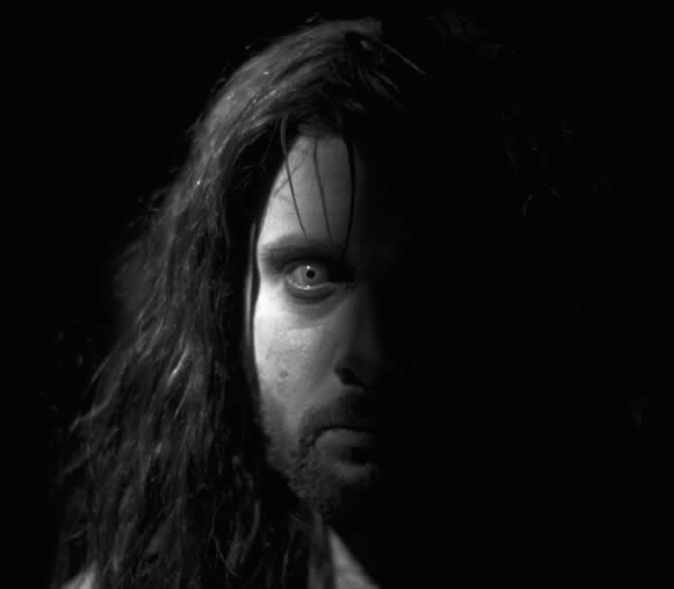
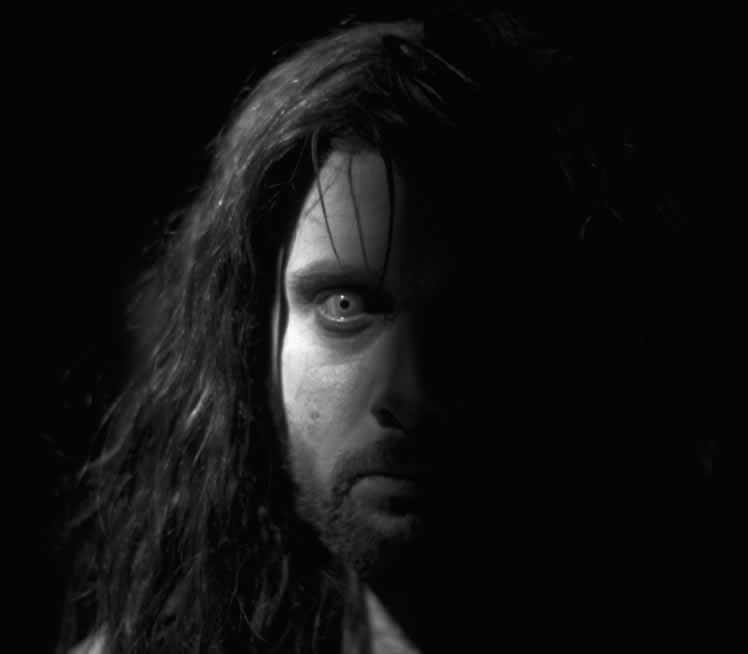

They think it's all about visuals and all about just pushing the limits of what you maybe can do with special effects. I think that it's really about the storytelling and the special effects should serve the storytelling.
— Chris Carter, Creator of X-Files
X-Pose Special Magazine, 1998
Chapter 4
Scene-to-Scene
"These days, with video camera technology, you can teach yourself how to tell stories…"
Read More »
"For an average 30 second TV commercial, I receive anywhere from six to ten thousand feet of film…"
Read More »
"I've met maybe two people who are able to be creative on demand…"
Read More »
"We'll get into filmmaking, because it's getting more accessible and easier to do…"
Read More »The motion picture industry emerged around the turn of the 20th century, and although there were many early film "manufacturers," there are only two recognized pioneers to this vastly popular form of visual storytelling-- Thomas Edison's film company and Biograph films. These two silent film studios contributed greatly to establishing a language and inventing the unique art form. So popular was this new media that from 1902, when the Electric Theatre opened its doors and became the first exclusive motion picture theatre, to the year 1909 -- 9,000 movie theatres opened throughout the country. In those early days there was very little structure in developing film shorts or full-length features (which didn't appear in theatres until 1915), but the magic of motion pictures captivated the public as the language of film was being developed before their eyes.
In the early years, the Biograph film company used a simple one-page synopsis to make movies, while Edison had developed a formulaic method of using a script, which simply listed the various scenes, each with only one or two sentence descriptions. There was very little structure in everything from camera angles, lighting and developing suspense, and drama and character depth as it was all new and experimental.
At that time, the technology forced the cameraman as Director. If there was a separate Director, he or she was simply an extension of the cameraman, who provided the important cinematic imagery and also contributed to the editing process. The technology was an overpowering force in the development of the media, much like the "new media" of today. This early method of filmmaking created two visionaries who contributed greatly to the language of film, each from the two rival companies.
There were two recognized pioneers in creation of film, Edwin S. Porter, for Edison films and David Wark Griffith of Biograph films. Porter gained recognition with the film The Great Train Robbery (1903), which if not established, certainly branded a Western formula for film (crime, pursuit and capture) that is still being used today. There was very little "acting" within the film and any specific characters were used to move the story along or for scene transitions. It's become one of the first acclaimed successes of telling an entirely visual story in film.
The Porter era is sometimes referred to as the theatrical phase of film production, where most films would follow the dynamics of stage productions and most of the scenes resembled watching a stage play. Porter was quoted in 1914 to saying, "We must record the assertion that the development of the stage greatly assisted in the advancement of the film." There was very little respect for this new media from those who came from theatre, but the early days was experimentation as every new picture broke new ground with new camera angles, lighting techniques and editing. All of this experimentation, with a focus on the technology and a more improvisational approach to production, will seem like déjà vu' when reading Chapter 5: Level-to-Level. Just as film was coined "new media" back then, so is "new media" today, living in an artistic laboratory.
Porter didn't fancy himself a Director, nor did he want the job. He enjoyed the more mechanical cameraman position. In those days, Director's didn't do very much as the actors were given simple improvisational instructions. Porter's strength was in taking the film footage and moving the story along with editing and narratives, which were the frames with added words of dialogue and narration, much like the word balloons in comic strips and comic books.

Silent films relied more on visual representation, for lack of audio, which emphasized the personalization of the experience or "interpersonal" experience.
Copyright: Courtesy the Library of Congress

The very first animated feature was based on a bet that cartoonist Winsor McCay couldn't bring a dinosaur to life.
Copyright: Courtesy the Library of Congress
David Wark Griffith was an actor and writer, who respected the theatre as an art form, but not film. The "manufacturing" mentality of the early industrial age created an assembly line formula that created a lack of quality and structure to film. Griffith's first directing debut was a film entitled The Adventures of Dollie (1908), which involved a kidnapped girl hidden in a barrel, which falls into a river, over a waterfall and back into her father's arms. Griffith included one of the first, if only casual, blueprinting of the visual storytelling climax (an essential part of any story).

Fortunately for the art of filmmaking, Griffith didn't fancy himself an exceptional actor.
Copyright: Courtesy the Library of Congress
Griffith has been accredited with having been the main contributor to the language of film, as his Biograph films became the yardstick from which all other films were measured. Most other filmmakers were struggling with duplicating formulas and methods that they couldn't immediately recognize and didn't understand. The competitors duplicated his themes, rather than try to decipher his style. His influence on filmmaking spread throughout the world and many films were recognized as having the Griffith-Biograph "look" to them. The film auteur was born.
Griffith focused on symbolism, imagery, camera angles and placement to tell his visual story; not that much different to filmmakers today. In his film The Country Doctor, the scenes filmed in and outside the home were always shot in the same place. Actors and actresses would move in and out of each scene from the same point of view. At first glance, this may be construed as an attempt to save time by shooting all the scenes at one time, but even in his masterpiece, The Birth of a Nation (1915), he used the same cinematic view. The choice had nothing to do with economics, as it was very important to him to impress the audience with a home that was rigidly stable and consistent, thus the repetitive shot.
These are the subliminal granularities and nuances of visual storytelling that many people misinterpret, but subconsciously absorb in the linear experience.
Many competitors were looking to add "Biograph lighting" techniques to their own films. Paraphrasing Allan Dwan, a director from a rival company at the time, "We all eagerly ran to new Griffith pictures, wanting to see what was new. His back lighting was magnificent." Nobody but Griffith dared shoot into the sun, but with the help of his cameraman, Billy Bitzer, they developed many effects that are still used today, in many visual media. "His use of reflectors, throwing light back into the faces of people was amazing. The sunburst in the hair, the haloes on the girls all of that was new to us, and all who had any sense copied them. He was a leader to the entire business. We've never had a leader like him since." There were also other contributors such as Maurice Tourner, George Tucker, Cecil B. deMille, Herbert Brenon and European influences from France and Italy.

The effects we take for granted today in every visual storytelling media wowed audiences and competitors and was dubbed "Biograph Lighting," back in the early part of the 20th century, thanks to DW Griffith.
Copyright: Courtesy the Library of Congress
The art of film may have continued to imitate the stage, if it were not for talents such a Griffith, who saw beyond the stage and developed a new art form. The world became the stage, and the screen; the curtain.
European comic art legend, Herge' is noted as saying that his international comic strip, Tintin was heavily influence by the films of Charlie Chaplin, Harold Lloyd, and Buster Keaton. He employed many framing techniques from film. Even in 1942, when he defined his unique comic strip language, he considered his stories as films: "So, no narration, no description. I give precedence to the picture, but of course, it's 100% about talking pictures. The dialogue comes graphically out of the characters' mouths."
The silent film drew the audience in by giving them the opportunity to contribute to the visual storytelling experience with their own personal rendition of voices and sound. The Interpersonal experience was much like the comics, but with dynamic, rather than static imagery.
Once the Jazz Singer was release in theatres as the first "talkie," the silent era of film (live action and animated) disappeared and with it a new universal language; without sound, there was no language and without language there were no limits. It didn't matter where you lived; the visual storytelling from silent films was international. There was no real need for any translation as imagery was a language without boundaries.

The scene and even the emotion in this silent sequence are clearly understood by anyone, anywhere because like the early silent films, the language of imagery is universal.
Copyright: Strangers in Paradise is © 2001 Abstract Studios and Terry Moore. All rights reserved. Used with permission. (www.strangersinparadise.com).
The importance of a balance between words and pictures became apparent with the advent of audio to motion pictures, and an evolution into an even more linear experience. The movies became more passive and the director took more control of the experience.
Human beings unknowingly have undergone a psychological evolution, through the bombardment of linear media. The visual media provides a more natural absorption of information -- instant gratification; sit back and watch. There are many stories to tell and many are enjoyable, but that sense of personalization has only returned recently with the advent of interactive media.
Filmmaking pioneer Cecil B. deMille believed that the early film pioneers were not true artists, but were more like the pre-Elizabethan dramatists, who paved the way for the next generations to emerge as the true artists. Orson Welles, who was known as an eccentric visual storyteller, even in the theatre had once devised a moving stage that turned to expose different scenes playing out in front of the audience. This was his attempt at creating a motion picture feel, but with the quality of theatre. Later, when he submitted to an outrageously lucrative offer from RKO Films, he moved to Hollywood. In the description of his first film to RKO executives, Orson Welles wrote, "A completely unprecedented experience for the audience since it will see a story told in an entirely new way."
He had once again, toyed with the idea of manipulating the "frame" of reality, by making the camera itself the protagonist; a visual pun which equated the "eye" of the camera with the "I" and character of Marlow. It a sense, he gave the audience the opportunity to "walk into and through" his play, by making the camera a character that framed reality. In theater Orson liked to violate the frame, to transgress its borders, which was preciously what he would have achieved by keeping the main character offscreen.
Today's technology-savvy youth have become thoroughly hypnotized by the magical capabilities of interactive products. There are toddlers using the basics of photo retouching, animation and making digital movies, complete with drama, action, suspense and an array of soundtrack choices. These new tools are only available for the first time at this impressionable age and it appears to be the catalyst of a new literacy; visual literacy. This sorcery propels them well beyond the literary word and deep into graphics, painting, audio, music, typography and even video.
The next generations will not know of a world where they couldn't express themselves or just communicate visually. This new literacy transformed all media to the decedent multi-flavored experience it is today, and there's no stopping it because human beings have developed an enormous appetite for visual media of every kind.
Duane Tucker is Chief Technology Officer for Dynamic Media, one of the industry leaders in the development of DVD interactive programming and producers of the largest China broadcast and interactive DVD special series in history. He's followed the use of computer graphics in films (referred to as "CGI") for years and now believes that the future technology will focus on faster, cheaper and better.
In the beginning of James Cameron's film Titanic, when we see Leonardo DiCaprio standing on the bow, as the ship heads out to sea, the camera flies past him, up towards and through the smoking smokestacks, then turns around and looks backwards toward the rear of the boat. "They said that that 60 second scene took 18 months to produce in CGI, because of the smoke coming out of the smokestacks," Tucker said. "They also had to hire hydrologists just to help them create special software to realistically animate the water." Once the technology and associated gadgets become more invisible, will it make room for unexplored artistic expression?
Wayne Hanna, the Academic Director for Visual Communications at the Illinois Institute of Art is not quite sure that technology really influences creativity. He believes it doesn't make much of a difference on how creative people approach things. "For instance, when students come in for the first time, we get a lot of monsters," said Hanna. "We get a lot of Jurassic Park things; the same old things. So, what they're doing is mimicking what they've seen or what they think is cool and it's always interesting to me which dictates which. Is the media dictating what's cool or are the kids dictating what's cool by what they like? The reason for bringing that up is to clarify that creativity is something apart from technology."
Creativity is something that the artist uses technology to accomplish and our left-brain dominant educational systems does not use technology very effectively to foster that creativity. "All the wonderful things that we can do technologically are still falling into the familiar patterns, where everybody runs the same way, everybody looks the same way, everybody thinks, kicks and dinosaurs are cool. So, part of what we try to do is to kick them outside of that box and find something different? How do you develop your personal style and in that process we tie one hand behind their back and dictate that they can't do kicking dinosaurs, now what are you going to do?"

A Godzilla-like created by Swedish 3D modeler Ulf Lundgren for FX Animation.
Copyright: © 2001 FX Animation & Ulf Lundgren. All rights reserved. Used with Permission.
There's a continuous need for more powerful imagery, stories and new ways of creating those stories and even though the sophistication level has increased exponentially over the past century, the core visual storytelling methods and formulas haven't changed much since the advent of the theatre.
Each new art form that emerges establishes its own niche and style, but the methods of development, directing and conceptualization are nearly the same. In silent film, the cameraman (or artist) created images on film, which he or she later edited into a more cohesive visual story. Today, that stage is done through a written script and the drawing board (both the literal and virtual version) and a digital nonlinear editing system.
Comics began and can still provide that same creative control; the artist is the cameraman, director, writer, etc. One of the main reasons, artistically, the art form is so attractive to the contributors of film.
There was once a time when publishing a comic book was the most cost-effective form of visual storytelling. This is no longer the case as the advent of digital film technology has created a new opportunity and although comics still ranks as the most personal, simplest and fastest visual media to produce, digital film is now the most economical way to tell a visual story. Many filmmakers such as Robert Rodriguez, Kevin Van Hook, Mathias Nastos and Kevin Smith started with smaller, more intimate productions, only to continue to produce and develop their own style.
As with traditional filmmaking, one of the first steps in taking the film from script to image requires the use of storyboards, which are very similar to comic strips and comic books.

Storyboards are the blueprint for visual sequences of the film. Here Kerry Gammill lays down the foundation for a film sequence in SPECIES II.
Copyright: SPECIES II characters © MGM. Artwork courtesy of Steve Johnson's XFX, Inc. All rights reserved. Used with Permission.
Storyboards are a series of sketches or sometimes even photographs that represents the various scenes in a film. It becomes a blueprint which may include notes on dialogue, special effects, and camera movement. As with the actual film, the storyboards must include critical components for continuity and style, so in a sense, they use the same techniques as comic books, but with one crucial differentiator; movement.
Kerry Gammill, who is a veteran storyboard artist, having worked on such films as Virus, Species II and Outer Limits has also worked extensively in comic books and as a "monster maker," designing the creatures seen in film. Gammill has written a book entitled, Drawing Monsters & Heroes for Film & Comics, where he details some of his more frightening of characters. He believes that when working on the storyboards for a film, Gammil believes can't get too attached to the work, because someone will most likely change it.
"The work of a storyboard artist or production artist is to provide visual tools for the director and producers (who make the final decisions) about how the film will be shot," he expressed. "An artist has little influence over what ends up in the finish film, but it's very interesting watching some of your scenes and designs come to life on the screen."

The basic differences in visual storytelling in film and comic books revolves around the dynamic of motion.
The storyboarding step is to visually document the scenes; a foundation on which to build while filming. The style of art used by storyboarding artists and young filmmakers vary wildly, but the core image is represented. The advent of digital technology has also expanded the role of "non-linear" editing, whereas the film footage is digitized and added to an Avid Media Composer or Avid Film Composer. This is a video editing system first introduced in 1989 and has since effectively altered the process of editing film and television.

Film editing systems such as the Avid Film Composer has altered how films are edited, cutting down costs and providing a nonlinear method of editing scenes. Digital filmmakers today can produce similar results with a desktop PC and Adobe Premiere and After Effects.
Copyright: Photos are courtesy Avenue, Chicago, IL
Terry Kaney is a senior award winning storytelling editor for Avenue, a production studio with offices in Chicago, IL and Santa Monica, CA. His specialty is highly recognized storytelling commercials for McDonalds, Hallmark and Kraft Foods. "I have many favorites, but one that comes to mind is the first commercial that Michael Jordan did with Larry Bird for McDonald's where they were playing horse all these different places and they end up finally on the top of the John Hancock building."
Kaney uses an Avid Film Composer, which is set up in his Michigan Avenue office. "For an average 30 second TV commercial, I receive anywhere from six to ten thousand feet of film. Unlike in the movies, where they'll do a few takes of a single shot then move on, with a commercial, they'll do 10, 15, 20, and 30, whatever it takes to get everybody happy with what they're doing. Then, it's my job to take all the footage and piece it together for a story."
Terry's been doing it so long it's become quite intuitive, but the timing becomes a key factor in presenting a visual story, and successfully communicating the punch line. "I set up my favorite scenes on my Avid system as a digital storyboard, because most of the time, there are no storyboards, or even a script for that matter. The agency and client decide on a concept for a story to tell and the director goes out and shoots the film he believes will successfully convey that message. There are a few customers, such as Kraft Foods who demand being an iatrical part of the creative process, but in most cases they let us do what we do best. "
Kaney fondly recalls one commercial that he worked on that was very simple, simple storytelling but won awards from Cannes (for commercials) to the Clio (the Oscars of television commercials). "I mean it couldn't be any simpler." The commercial for McDonald's started with a baby swinging back and forth towards the camera. "Eventually, you start to realize that when she swings up close to the camera [you], she smiles, but when she swings back and away; she cries." Confusing, yet intriguing until finally you see the reverse angle and the reason for her laughing is she can see the McDonald's sign. "That showed me how much more you could accomplish, with less," said Kaney.

A sketch which sets the stage for the P3 (Population 3 million), a recreation of the old black-and-white live action serials.
Copyright: P3 is TM & © 2001 BOXTOPTV.COM. All rights reserved. Used with Permission.
Filmmaker Robert Rodriguez, who produced the films Desperado, El Mariachi, From Dusk 'til Dawn and Spy Kids was quoted as saying that he uses the same type of non-linear editing systems on all his films (including Spy Kids). "Nonlinear editing systems are faster and more conducive to creativity."
As with Rodriguez, the film auteur can sometimes take on many roles in order to exert his/her vision into how the story is presented. He clearly has a distinct style, because he's taken on the role of director, producer, editor, steadicam operator and music director—all to "make it true to at least one person."
This "interpersonal" creative experience is the cornerstone of visual storytelling in comics, but unusual in Hollywood, which traditionally focused on the lavish multi-million dollar blockbusters, dozens or hundreds of people, linear editing and following the same formulas set in stone about a century ago. Even a 30 second commercial involves about a dozen people—more depending on the content. "It's all about taking chances," Rodriguez believes. "That's how new waves and trends get started. Someone somewhere is willing to go in the opposite direction."
Rodriguez believes that filmmakers should get used to the idea that the first or second take will have to do, and if it doesn't work; make it happen later in the editing room. He insists that the prep time—planning the shots carefully, either through storyboards, script or in the mind's eye, all the scenes that are needed will be at the cutting stage; in editing. When asked how many people were on the crew of his first film El Mariachi, Rodriguez said three, "Me, myself and I."
"These days, with video camera technology, you can teach yourself how to tell stories and work in the visual medium. Guys like Charlie Chaplin, Buster Keaton--they didn't go to film school, they created their own medium. Video technology puts filmmaking back in the hands of the people--that's how I learned how to make movies; making movies at home."
During the filming of the Matrix, directors Andy and Larry Wachowski were intensely focused individuals with their own idea. They didn't let the multitude of hands that touch the collaborative nature of filmmaking change their personal vision. Interestingly enough, the Brothers Wachowski had been working on creating another comic book series, when they were asked, if they had any ideas for a new series. They didn't at the time, but what manifested from that simple question was a couple of cyberpunk ideas that they had been working on which they said "sort of exploded, over a period of about three days." The Matrix was born, spawned from a comic book concept and by moving the story into film; there were both new limitations and opportunities. For one thing, film is so much more work.
Kevin Van Hook, filmmaker and special effects wizard, having done effects and storyboarding for films such as My Favorite Martian, 13th Warrior and Miss Congeniality, as well as for television; Ally McBeal and Max Steel. Ultimately, Kevin considers himself a storyteller, whether it's in film, television, comic books or the internet, he simply enjoys the act of creating new stories and adventures. He is best known in comic books for his many contributions to Valiant Comics and as writer of the famous Flash Gordon Sunday comic strip. He recently acquired the final funding to complete a film called Frost: Portrait of a Vampire, starring Jeff Manzanarez and Gary Busey, which is based on his 1990s comic book series Jack Frost. "Frost: Portrait of a Vampire is about two best friends," said Van Hook. "When one of them dies (and becomes a vampire), they become enemies. That's what happens is the pragmatist has to go after his best friend and stop him from going on a psychopathic killing spree and taking out everybody." "It was an interesting experience to write a screenplay based on the comic book I did when I was 21 years old, and then try to be somewhat true to that guy that wrote that, and at the same time make it better; make it everything that a film needed to be."

Kevin VanHook with Gary Busey ,on the set of Frost: Portrait of a Vampire, a feature length 35 millimeter film whch he wrote, directed and co-produced.
Copyright: Photography by Vince Di Meglio. The film is called, "FROST: Portrait of a Vampire" Copyright 2001 Killing Frost, Inc. All rights reserved. Used with permission.
Van Hook mentioned that the story revolves around Frost having to track Nat, his ex-friend turned vampire, through the sewers of southern California, so there's a sequence where Frost is being attacked by bats (all digitally animated). The big confrontation with Nat, culminates in a cemetery; the setting for the big climax. "It's a lot of fun, and was definitely a lot of locations, and a lot of planning. This one took a long period of time to produce, so it'll be very strange to be on my next film, to conceive a story, to conceive of a way to shoot the story, and shoot it within a few months as opposed to a few years." There was a period of time where the funding had run out for the Frost film and Van Hook waited for new funding to transpire. The total budget for the film was over a million dollars, but what his funding partners recognized was that his affiliation with his special effects house (and the experience that transpires from that) could easily make that million look like three million.

This page from the original Jack Frost comic book was used as the storyboard for an identical scene in Frost: Portrait of a Vampire. In the story this is the wife of the vampire has broken into Jack's house to find out whether Jack is a vampire, too.
© 2001 Kevin Van Hook. All Rights Reserved. Used with permission.
 

Jeff Manzanarez as Jack Frost and C.R. Lister as Nat McKenzie (the vampire) in Frost: Portrait of a Vampire, a feature length film about two friends who become bitter enemies because one of them becomes a bloodsucking vampire.
Copyright: Photography by Vince Di Meglio. The film is called, "FROST: Portrait of a Vampire" Copyright 2001 Killing Frost, Inc. All rights reserved. Used with permission.
When VanHook did Drifter, his first film short, he recalled that having come from comics, there was the pace, but it's really dictated by the reader. "The artist puts the visuals story down on paper and it's only assumed it's going to be read at a certain pace. However, a reader can skim it, they can flip the pages faster, they can skip a page, they can decide not to read the little annoying yellow box, which was also an important narration, but because they skipped it; they'll have a different experience than another reader. So, they're really controlling the direction, so to speak, whereas in film, I found out that's not true. I can make the slide seem really quick, or I can make it seem protracted, or I can make the character seem more nervous by lingering on a look or a glance. It's still one of the most fascinating things about storytelling in film is that whole concept of how you can control and manipulate time after the fact."
As with Terry Kaney, who receives up to ten thousand feet of film, in a feature length film, the filmmaker is not required to necessarily live with what was accumulated during filming. "You can make it more than it is; pure editing," said VanHook. "I still find that as one of the most fascinating things. The comic book artist does a lot of editing, in the film sense, prior to the finished piece."
Filming and comic books are very similar in the sense that's the extreme motion. In comics, throwing a punch, or whatever extended body movement would be stretched to an extreme -- as far out as humanly possible, because that's going to provide the most sense of dynamic energy. VanHook would choose the most exciting angle, then at that extreme point, would cut the scene; either in a comic book or a movie—to him it's the same. He would than find another angle where the punch or movement is in the exact same position that the character being hit, focusing on him and his extreme reaction to that. "That would make a really nice cut," said VanHook. " One of the things that comes from comics for me when I'm shooting, when I'm setting up shots, or how I would tell the story, because I'm not an actual camera operator myself. When I'm composing what I want for the story, I'm consciously trying to bounce the size of the characters so that there's some pleasing rhythm to it, whether that's the traditional start wide and work your way in and work your way back out at the end of the scene. If you're trying to create a very specific move by coming in for a dramatic close-up when somebody says something important, whatever it is, but I'm very conscious of trying to not jump in and stay on an extreme close-up needlessly, and go back to a wide, because it's an easy trap to fall into, is finding the best take and disregarding what the composition is, if it's close or wide, or medium, or whatever. I tend to feel that there are certain times to use a close-up, because it could be overused. It's like using too many exclamation marks in writing; if overused, it loses its meaning. Obviously, I am definitely influenced by my comic book background in terms of the storytelling."
Much like Robert Rodriguez, Lee and Chris Gabel have been involved in filmmaking since they were young. Lee bought a Super-8 film camera when he was 14 and the two collaborated on many different short films. They experimented with stop-motion photography, live action and everything in between. They used as many in-camera effects as they could think of - and a few out-camera effects, too, including scratching the film in order to have a laser bolt shoot across the frame. Not having the tools to make the effects they wanted forced them to be creative and find feasible ways to achieve a similar result.
They made the jump to analog video and now digital video, where they took a local university radio show called Ways of Knowing and decided to add visuals to the storytelling. The filmmaking started even before the film was being shot, with Gabel's personal interpretation, which began to foster some exciting imagery. "Then once I started to storyboard, where I had to take a bit of reality into account (see the film still of Ways of Knowing in the shot section of Chapter 6 or at www.reelradicals.com). "One of the shots I envisioned was a shot of the two characters – from above them looking straight down – as if the room was 28 feet high and the camera is very high up and maybe descending on them slowly. That would work in a big budget film, a game or a comic book, but not in someone's borrowed office." Gabel filtered more of his original views through a "practicality meter," knowing that there was a limited budget and no professional film set. The fixed room was limited to actual physical space that was available, so he decides to enhance the experience with symbolism. "For example, one of the characters is a psychologist and the other character is a guy who believes he's an alien."


Once the characters in the film Ways of Knowing started telling the story, Gabel wanted to get the audience "inside the characters' heads," so he used a dolly shot and an extreme close up (see Chapter 6) to symbolically move inside their heads and get more engrossed in the story and what they were saying.
Copyright: Images © 2001 Reel Radicals Productions" and "www.ReelRadicals.com"
Once the characters in the film Ways of Knowing started telling the story, Gabel wanted to get the audience "inside the characters' heads," so he used a dolly shot and an extreme close up to symbolically move inside their heads and get more engrossed in the story and what they were saying.

Ways of Knowing mixes the Brothers Gabel's love for film and their expertise in 3-D animation.
Copyright: Images © 2001 Reel Radicals Productions" and "www.ReelRadicals.com"
Unlike Frost: Portrait of a Vampire, the Gabel Brothers went on there own to produce this film. "We feel we're successful with symbolic visuals as our equipment was limited," said Chris Gabel. "There was this story we wanted to tell and I didn't want our lack of equipment stop us." Chris said he sat down one day and drew some initial sketches of what the room where the majority of the action takes place would look like. The storyboards themselves were drawn according to where they were going to shoot.
Chris admitted he enjoys movies better than books because movies are a shared experience. Reading a book is too much of a solitary experience. "You sit alone and you read it. It may take you an evening, a weekend, or a month. With movies, there's an audience and a show time. It's an event and I like that about movies. I like to see an audience's reaction to my creations. It's quite thrilling."
When shooting Way of Knowing (the film short is online at www.reelradicals.com), 99% of the shots were on a tripod. There are a few scenes that they expereimented with a handheld shot, like NYPD BLUE, but it was either a really short scene or they wanted a slightly kinetic look and feel. At one point in the film, there are some flashback scenes with a description of an alien abduction and they chose to intercut the description of the alien abduction with scenes of aliens coming out of a UFO. "That's the stuff that was done with handheld, said Chris Gabel. "Most of the film was done with a tripod. It gives a steadier image and if we wanted to move the camera, we'd use either zooms, which we tried to avoid or a dolly shot." They ended up building a dolly and bringing it into the small office where they were shooting. The dolly had to be big enough for the tripod and the camera operator – slightly bigger than a child's wagon. Gabel confessed it was a challenge fitting the dolly into the tiny office, let alone using it, but if the dolly proved to be difficult, they use intercut scenes, close up, then medium shots to achieve the same effect. Similar to the panel structure of comics – a dolly shot, sans the motion.
"The storyboards were a good foundation and we built on that. The final movie itself was quite close to the original storyboards, which I thought was good because that was my original vision."
Copyright: Images © 2001 Reel Radicals Productions" and "www.ReelRadicals.com"
Without the initial investment of purchasing the video and computer equipment and software, the brothers Gabel produced Ways of Knowing for less than $500. All the actors were working for the experience and weren't paid, the locations were offices of family members and most of that $500 was spent renting the equipment that they didn't already have, such as a boom microphone, and they fed everybody. "The food is probably the most expensive item on the budget, and we were fortunate because all the editing we did ourselves as the computer animation effects, too. Those two stages are probably the most expensive when making an independent film."
It is important to realize the current convergence of visual storytelling into a more "rendered" art form. Film may always be photographed, but the advent of the much advancement in technologies no longer limits Directors to the photographic image. Film doesn't need to be confined to "real-life" any longer.
A recent addition to the digital effects stage is the use of digitally rendered flashes on guns that merely use blanks. "I tend to not use blanks all the time in my films. I do if I feel it's vitally important, especially in small rooms. I just don't personally feel comfortable with that risk, because it's still a charge, it's still an explosion. However safe it might be I just don't want to run the risk. So we do digital muscle flashes, shell casings discharging, it works out actually a little cheaper even for us to do that, especially if we don't get real involved with lots of shell casings, but we still include interactive light with the flash, so the people's faces light up when the gun fires, so there's no loss to the reality in the storytelling effects."
Ten years ago filmmakers would have looked at their shots and said "wow, that's wonderful, but it's not useable." Today, they're looking at it differently – "wow, that's wonderful, have the CGI guys fix it." It's sometimes been called a band aid that's too easily reached, but Van Hook says that it's an easy trap to fall into if you know much about special effects, because you can adjust the composition, or change lighting, color, backgrounds. "All kind of things," he added. "No matter how good you are or how focused you are you still make dumb decisions like having a black man walking around at night in a black jumpsuit. It's like the comic book artist at the drawing board- except the layouts become the film footage. And you sit there and go, okay, is there anything I can do to fix this?"

(Click image to download Hi-Rez PDF version) Animation Production Diagram.